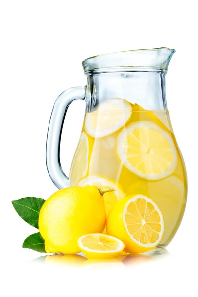

Home Made Lemonade

The basic drink that nearly anyone and make.
Ingredients
- 8 to 10 large lemons
- 1 cup granulated sugar
- 1 1/2 quarts water (6 cups)
- Lemon slices, for serving (optional)
Equipment
- Measuring cup or medium bowl
- Knife and cutting board
- Juicer or citrus reamer, or stand mixer with the paddle attachment
- Pitcher
Steps
- Juice the lemons and strain out the pulp
- Combine the lemon juice and sugar, whisk until the sugar is completely dissolved
- Add water and chill
- Serve with ice and lemon slices